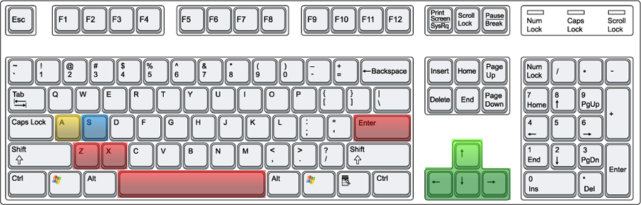

This section of the Cadabolg GDD is to inform the reader about the
various procedures, mechanics and assets used in Cadabolg's Battle
System.

| Movement |
Action |
A-Ability |
S-Ability |
Up Arrow: Move Up
Left Arrow: Move Left
Right Arrow: Move Right
Down Arrow: Move Down
|
Z: Confirm/Attack
X: Cancel/Block
Space: Switch Leader
Enter: Pause -> Menu
|
A + Up: A-Ability#1
A + Left: A-Ability#2
A + Right: A-Ability#3
A + Down: A-Ability#4
|
S + Up : S-Ability #1
S + Left: S-Ability #2
S + Right: S-Ability #3
S + Down: S-Ability #4
|
Note: A & S are sequential, not simultaneous.
[return to top]
This section covers the different pieces of the HUD the player must pay attention to during battle.
Displays information of the Party Leader. Consists of the HP/MP Ring, Actor Mugshot,
Action Skills, and Support Skills. Located at the bottom-center of the HUD.
[return to top]
Display information of each Ally. Consists of the HP/MP Ring and Actor Mugshot. The
Ally Window is arranged based on party-order, which means that the top-most Ally will
rotate in as Leader if the player chooses. Located at the top-right corner of the screen.
[return to top]
A tiered gauge that fills up gradually during the course of battle. Once a tier is reached, it becomes
possible to perform Junction attacks (see Junction) with different members of the party on a selected enemy.
The Metasync Gauge fills up faster if the party is performing well or struggling in battle making its use a
way for the player to turn the tides of the battle in the party's favor. Located at the top-left corner of
the screen.
[return to top]
A text message that pops up to inform the player of how many successful consecutive attacks their party has
performed on an enemy. The higher the number of the CC, the more the metasync gauge will fill.
[return to top]
A menu system that overlays the screen when the player chooses to pause the game. This gives access to Items,
Tactics and Junction during battle. The player navigates through the icons using the directional keys and can
select an entity with the "Confirm" button or return to the hub with the "Cancel" button.
[return to top]
3.0 Mechanics
3.1 Conditions
Actors can have one Condition at a time. The current Condition can be seen
on the Actor's mugshot on the HUD. The default Condition is Normal. An Actor
induces a Condition if they are the target of a skill which inflicts it. The
chance of getting a Condition is random, but based several determined factors.
| Icon |
Name |
Abbr. |
Description |
 |
Normal |
NOR |
No changes to Actor status. |
|
Rejuvenate |
REJ |
Actor regains X% HP per second. |
 |
Energize |
ENE |
Actor regains X% MP per second. |
 |
Adrenaline |
ADR |
Actor deals double the Physical hits. |
 |
Inspire |
INS |
Actor deals double the Magical hits. |
 |
Quickstep |
QCK |
Actor moves faster on the map. |
|
Toxin |
TOX |
Actor loses X% HP per second. |
 |
Delirium |
DEL |
Actor loses X% MP per second. |
 |
Fracture |
FRA |
Actor is unable to do Physical attacks. |
 |
Speechless |
SPC |
Actor is unable to do Magical attacks. |
 |
Immobilize |
IBZ |
Actor is unable to move on the map. |
 |
Knockout |
TKO |
If Actor's HP = 0, the Actor is unable to act until revived. |
 |
Berserk |
BSK |
If Actor's MP = 0, control is lost over Actor until calmed. |
A Condition can be canceled (returning the Actor to Normal) if the
opposing Condition is induced.
REJ opposes TOX.
ENE opposes DEL.
ADR opposes FRA.
INS opposes SPC.
OCK opposes IBZ.
[return to top]
3.2 HP/MP Synergy
If an Actor has taken damage on their HP/MP, the player can choose to use that damage
[return to top]
3.3 Skills
Abilities
Action
Support
[return to top]
3.4 Items
[return to top]
3.5 Tactics
[return to top]
3.6 Junction
[return to top]